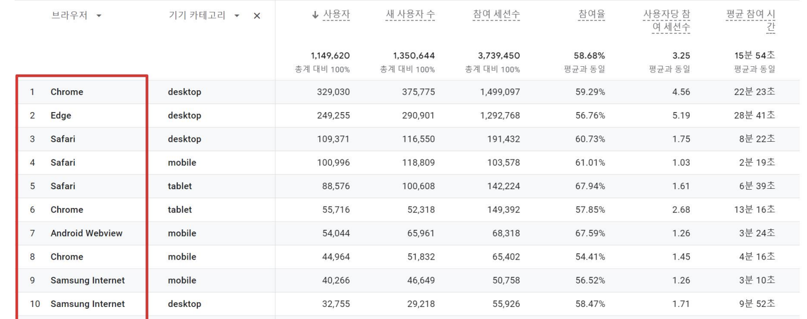

기본 정보
화면 기준
| 기준 | PC/Tablet | Mobile |
|---|---|---|
| 문서 및 버전 | HTML5, CSS3, JavaScript, Jquery | |
| 인코딩 | UTF-8 | |
| 웹 유형 | PC/tablet | Mobile |
| 크로스 브라우징(사용자수 순서) whale은 나이스에서 사용함. | chrome, ie edge, macOS safari, whale | IOS safari, chrome, 삼성인터넷, whale, |
| 해상도 기준 / 디자인 너비 | 1920 / 1320 | 700 이하 / 100% - 40px |
폴더구조
| 폴더구조 | 설명 |
|---|---|
 |
|
브라우저 이용현황
PC
TABLET